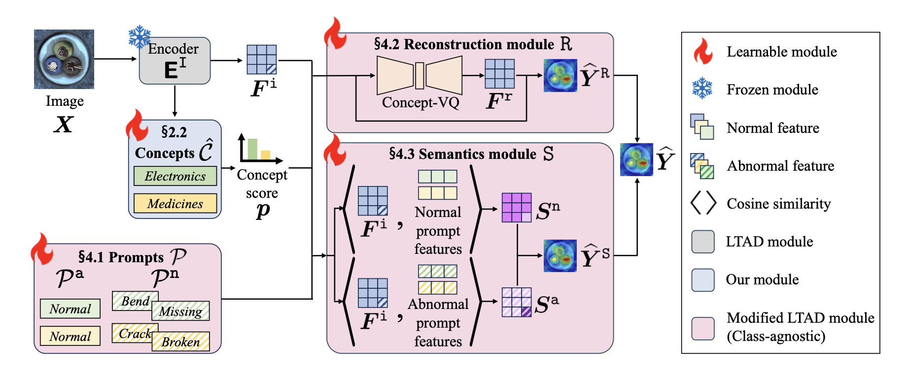
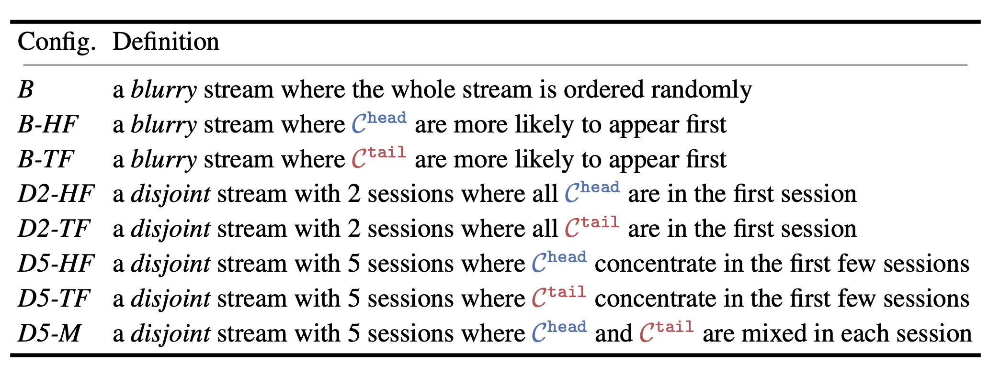
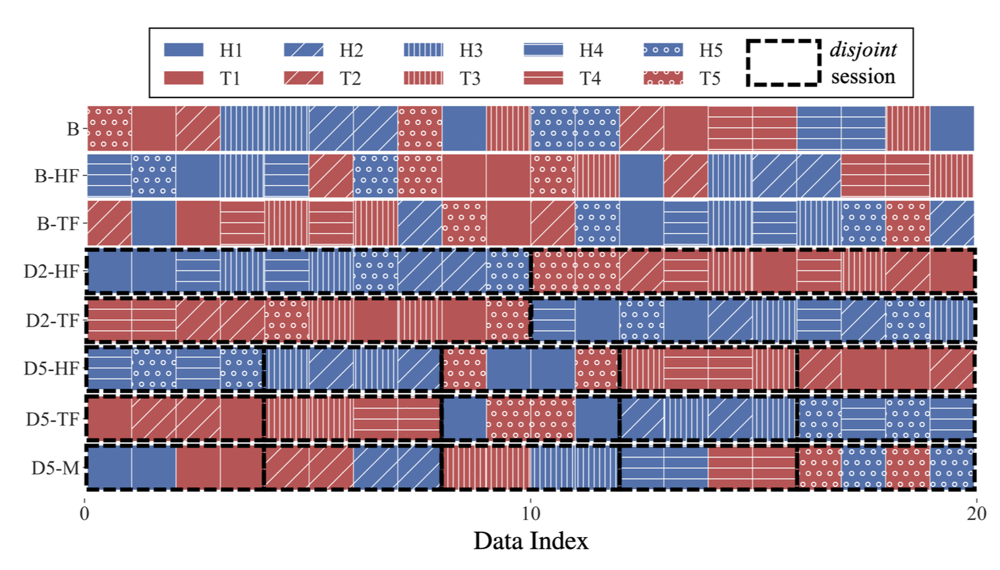
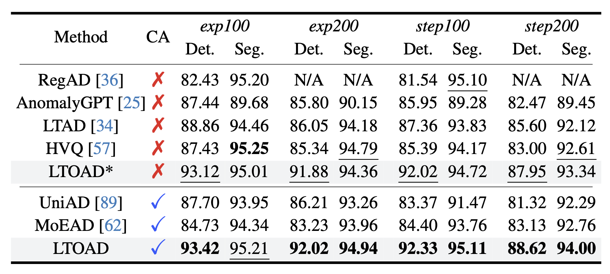
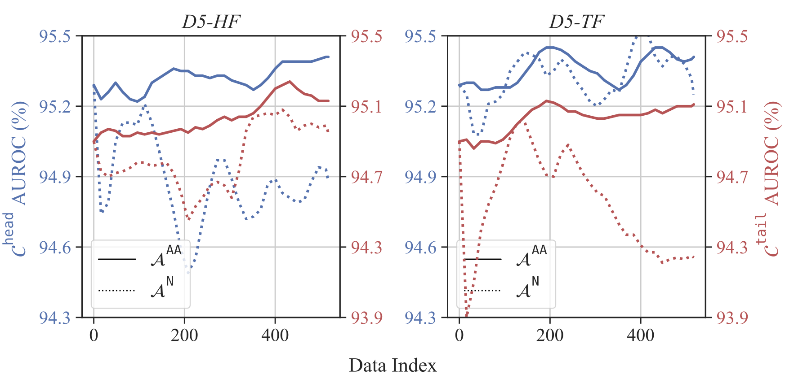

We propose the task and benchmark for long-tailed online AD (LTOAD);
We propose a class-agnostic AD framework that does not require class information whatsoever.
Abstract
Anomaly detection (AD) identifies the defect regions of a given image. Recent works have studied AD, focusing on
learning AD without abnormal images, with long-tailed distributed training data, and using a unified model for all
classes. In addition, online AD learning has also been explored.
In this work, we expand in both directions to a realistic setting by considering the novel task of long-tailed
online AD (LTOAD). We first identified that the offline state-of-the-art LTAD methods cannot be directly applied to the
online setting. Specifically, LTAD is class-aware, requiring class labels that are not available in the online setting. To
address this challenge, we propose a class-agnostic framework for LTAD and then adapt it to our online learning set-
ting. Our method outperforms the SOTA baselines in most offline LTAD settings, including both the industrial manu-
facturing and the medical domain. In particular, we observe +4.63% image-AUROC on MVTec even compared to
methods that have access to class labels and the number of classes. In the most challenging long-tailed online setting,
we achieve +0.53% image-AUROC compared to baselines.
Figure 1: Comparison of LTOAD to class-aware anomaly detection methods on offline and online learning.
(a) Class-aware methods have a class-specific module for each class $c$ in the class
set $\mathcal{C}$. (b) These methods cannot work in online learning when
the class labels are unavailable. (c) LTOAD solves this prob-
lem by learning a concept set $\hat{\mathcal{C}}$ to approximate $\mathcal{C}$. We note that
$\hat{K} = |\hat{\mathcal{C}}|$ does not need to match $K = |\mathcal{C}|$. (d) In online learning,
LTOAD can weight input images of seen and unseen classes with
existing concept-specific modules, i.e., $\{p_\hat{c}\}_{\hat c \in \hat{\mathcal{C}}}$.
Making LTAD class-agnostic
Given an image $\mathbf{X}$, an AD model $F_\theta$ , parametrized by $\theta$,
aims to predict an abnormal map $\widehat{\mathbf{Y}}$ or an abnormal label $\hat{y}$ indicating whether the image is abnormal or not.
To remove the requirement of having $c$, we introduce a concept set $\widehat{\mathcal{C}}$
where we assume that the class information $c$ can be represented as a composition of multiple concepts in $\widehat{\mathcal{C}}$.
For example, the class $\it{transistor}$ is related to and derived from concepts $\it{semiconductors}$ and $\it{circuits}$.
In other words, for each image of class $c$, instead of applying a hard one-hot label,
we employ a soft weighting mechanism and assign a soft label $p \in \mathbb{R}^{\hat K}$ where $\hat K = |\widehat{\mathcal{C}}|$.
For this approach to be effective, the concept set $\widehat{\mathcal{C}}$ should be representative enough to cover the image classes ${\mathcal{C}}$ of interest.
Instead of manually selecting the set $\widehat{\mathcal{C}}$,
we leverage the zero-shot capability of foundation models
where $\widehat{\mathcal{C}}$ is
learned with only the visual information of the training set and without seeing any class labels.

Figure 2: Proposed class-agnostic pipeline.
We construct concept set $\widehat{\mathcal{C}}$, and the correspondent normal prompts $\mathcal{P}_n$ and abnormal prompts $\mathcal{P}_a$.
The concept score $p$ is assigned to each image $\mathbf{X}$ by computing the similarity between $\mathbf{X}$ and each $\hat c \in \widehat{\mathcal{C}}$.
It then controls the soft switching mechanism in our class-agnostic reconstruction module $\tt R$ and semantics module $\tt S$.
$\tt R$ reconstructs $\mathbf{F}^{\tt i}$ into $\mathbf{F}^{\tt r}$ through Concept VQ and output $\widehat{\mathbf{Y}^{\tt R}}$
by measuring the dissimilarity between $\mathbf{F}^{\tt i}$ and $\mathbf{F}^{\tt r}$.
S compares the similarity map $\mathbf{S}^{\tt n}$ of $\mathbf{F}^{\tt i}$ and normal prompt features
and the similarity map $\mathbf{S}^{\tt a}$ of $\mathbf{F}^{\tt i}$ and abnormal prompt features to output $\widehat{\mathbf{Y}^{\tt S}}$.
The final prediction $\widehat{\mathbf{Y}}$ is aggregated from $\widehat{\mathbf{Y}^{\tt R}}$ and $\widehat{\mathbf{Y}^{\tt S}}$.
.
LTOAD benchmark
Given a model $F_{\theta_0}$ where $\theta_0$ is the parameters trained offline on an LTAD dataset,
the goal of LTOAD is to update the parameters $\theta_t$ in an online manner to improve the performance on a data stream
$\widetilde{\mathbf{X}}_{\leq t} = \left[ \widetilde{\mathbf{X}}_1,···, \widetilde{\mathbf{X}}_t \right] $ where each image $\widetilde{\mathbf{X}}$ comes sequentially.
Formally, we focus on improving the accuracy of $F_{\theta_t}(\widetilde{\mathbf{X}}_{\leq t}) = \hat{\mathbf{Y}_t}$ where $\hat{\mathbf{Y}}_t$ is the prediction at $t$.
Note that $\widetilde{\mathbf{X}}_{\leq t}$ is an ordered list, i.e., LTOAD is evaluated sequentially.
We consider the any-$\Delta$ inference setting where the model is updated on small batches of data samples of size $\Delta$.
As the data comes in a stream, a model's online learning performance is highly related to the ordering data.
To study the effect, we sequentially split the data stream into sessions which corresponds to a sublist of the dataset.

Table 1. We define 8 configurations with combinations of different session type $\in$ {blurry, disjoint} and ordering type $\in$ {head-first, head-first, else}.

Figure 3. We visualize the 8 configurations with a toy example
where $\mathcal{C}_{\text{head}}$ and $\mathcal{C}_{\text{tail}}$ each has 5 classes.
Experiments
Our class-agnostic LTOAD framework consistently outperform SOTA AD methods on most long-tailed settings. Noted that being class-agnostic is a more challenging setting than not.

Table 2: Comparison ($\uparrow$) on long-tailed AD offline MVTec
in image-level AUROC for anomaly detection (Det.) and pixel-level AUROC for anomaly segmentation (Seg.).
The column CA (class-agnostic) indicates whether a method requires class names or the number of classes during training or not.
We mark the best and second best performances in bold and underline.
Figure 4: Qualitative comparison among LTAD, HVQ, and LTOAD (ours) on MVTec.
Inputs from $\mathcal{C}_{\text{head}}$ / $\mathcal{C}_{\text{tail}}$ are outlined in blue / red.
Our online learning algorithm $\mathcal{A}^{\tt AA}$ improves steadily under both D5-HF and D5-TF
while the baseline $\mathcal{A}^{\tt N}$ falls off during later steps.

Figure 5: Performance curve of $\mathcal{A}^{\tt N}$ (baseline algorithm) and $\mathcal{A}^{\tt AA}$ (our online learning algorithm)
in pixel-level AUROC on $\mathcal{C}_{\text{head}}$ and $\mathcal{C}_{\text{tail}}$.
Citation
@inproceedings{yang2025ltoad,
title={Toward Long-Tailed Online Anomaly Detection through Class-Agnostic Concepts},
author={Yang, Chiao-An and Peng, Kuan-Chuan and Yeh, Raymond A.},
booktitle={Proc. ICCV},
year={2025}
}